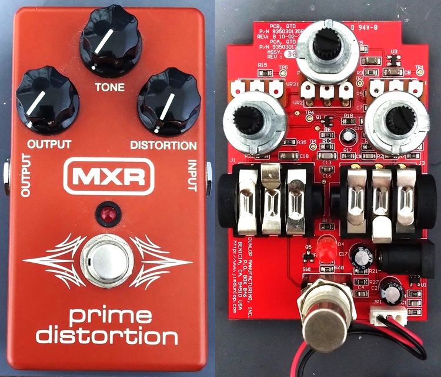
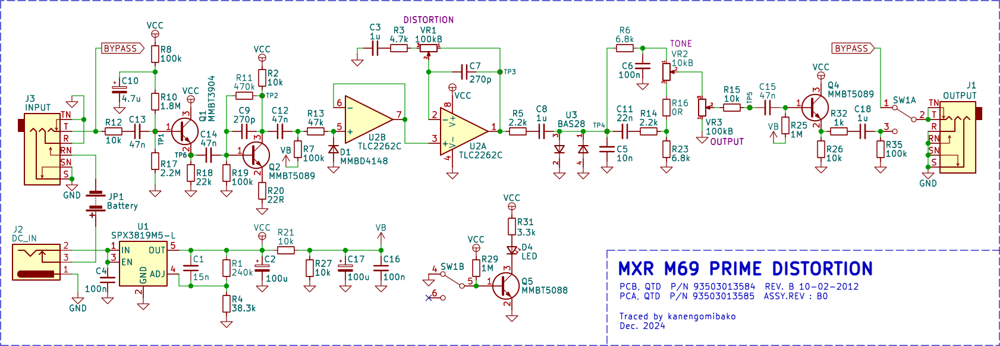
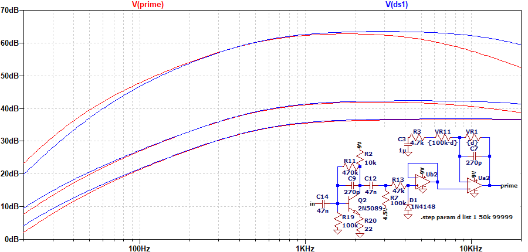
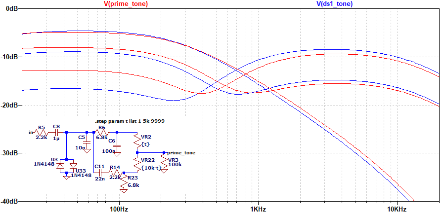

MXR M69 Prime Distortion 解析
2025年01月25日 カテゴリー：修理・改造・解析

MXR M69 Prime Distortionは、2013年に数量限定で発売されたエフェクターです。回路図が出回っていないようだったので、解析してみることにしました。KiCadデータ（基板画像入り）とLTspiceの回路図データはGitHubにあります。
▽回路図

入力が繋がったままの古いバイパス方式で、トゥルーバイパスやミレニアムバイパスではありません。電源部には、Super Badass Distortionと同じレギュレーターが使用されています。主要部分は、BOSS DS-1とほとんど同じです（参考：Boss DS-1 Distortion Analysis）。
Custom Badass '78 Distortion（2011年発売）もDS-1に似ています。これのクローンと思われるPedalPCBのPatron DistortionとPrime Distortionを比較すると、違いはクリッピングダイオードだけです。数量限定とはいえ、このように似通ったペダルが販売されたのは不思議に思います。
▽シミュレーション
- DISTORTION 0% → 50% → 100%

DS-1との比較です。高音域・低音域の出方が少し異なっています。
- TONE 0% → 50% → 100%

DS-1の方がトーンポットの値が大きく（20kΩ）、より高音域が出るセッティングにすることが可能です。